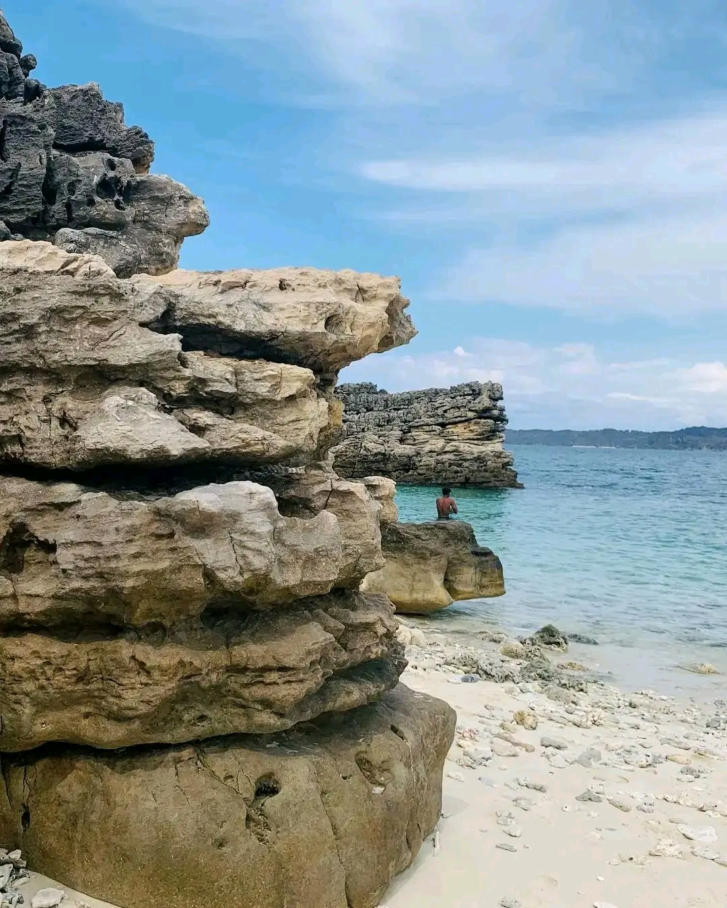
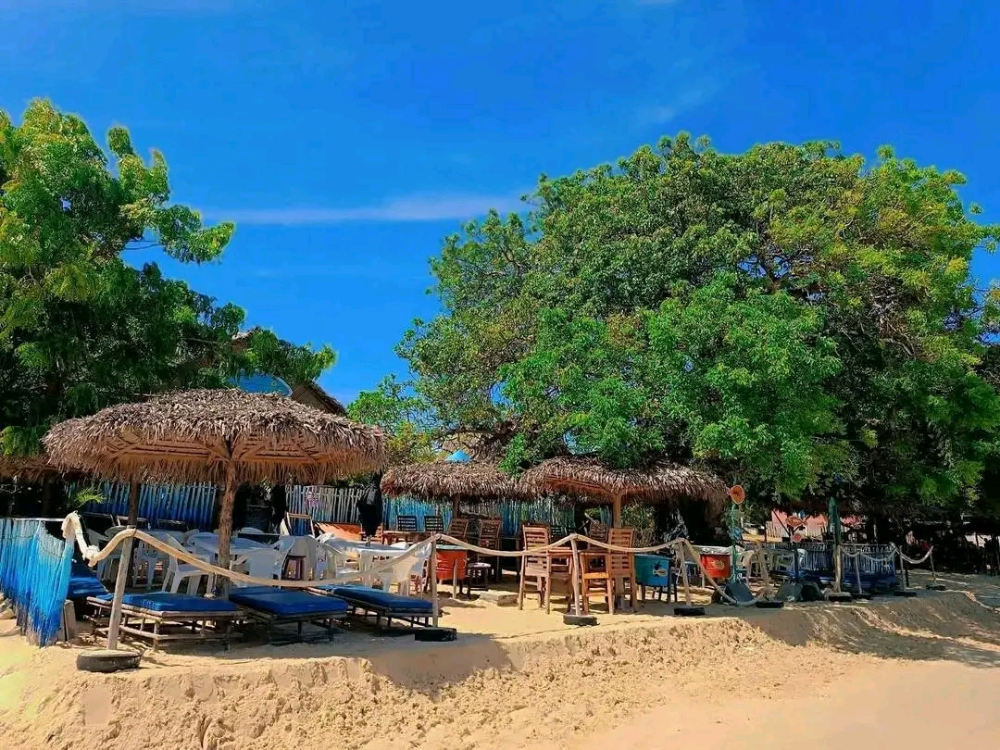
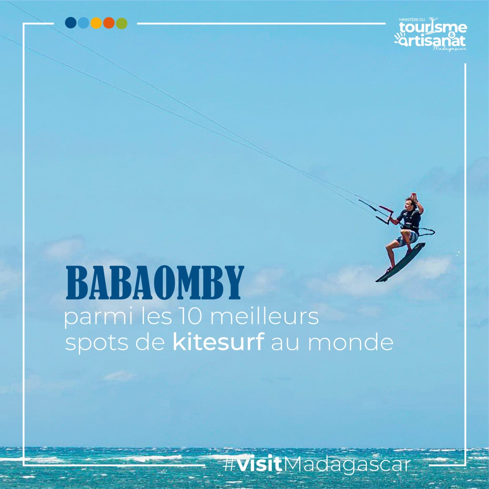

Les Eaux Cristallines
Découvrez les plus belles côtes du nord de Madagascar
Diego Suarez est entourée par la mer, et chaque côte est plus belle que l'autre. La Mer d'Émeraude est un lagon aux eaux turquoise peu profondes, idéal pour la détente et les sports nautiques. C'est un véritable paradis pour les amoureux de la nature.
Baignade
Kitesurf
Plongée
Détente
Mer d'Émeraude
Un lagon protégé par une barrière de corail, célèbre pour sa couleur unique au monde.
Excursions
Des bateaux traditionnels vous emmènent passer la journée sur des îlots déserts.
Plages de rêve
Ramena et les Trois Baies offrent des étendues de sable blanc à perte de vue.


